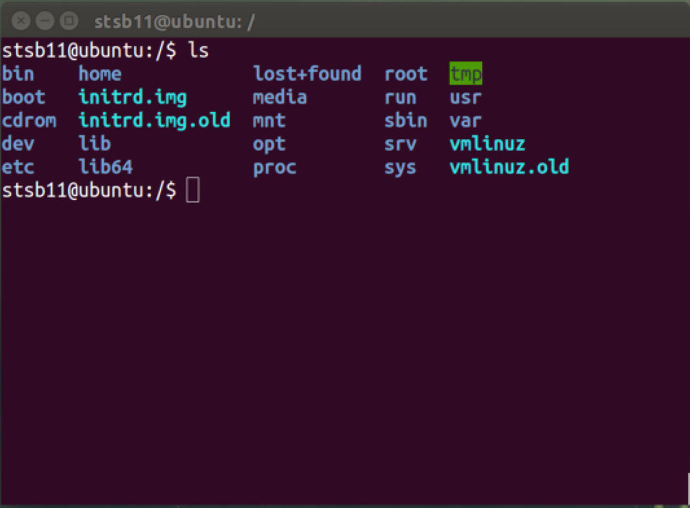
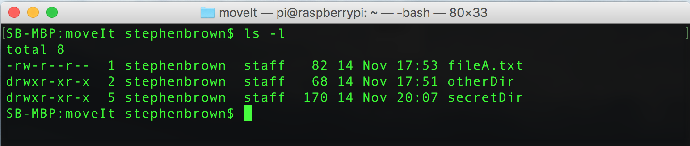
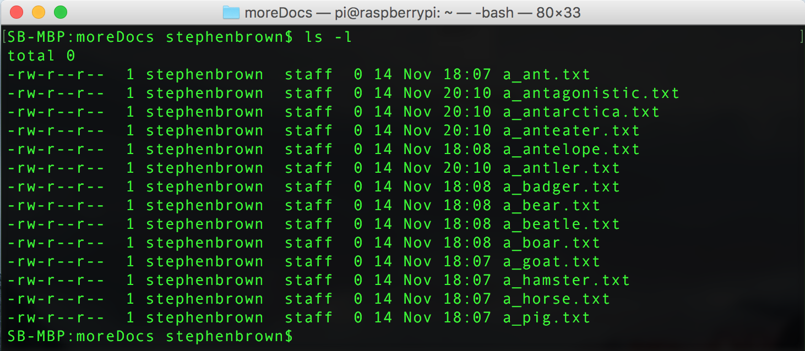

Fab Files
Introduction
Learn It
- Let's get to grips with understanding how files are organised on UNIX/Linux/MacOS systems.
- The entire system starts in a
rootdrectory, which has several directories inside it…

/bin: The user's binaries (programs)./sbin: Programs that help the computer system run/home: The user's files (the same as 'My Documents' on Windows)/lost+found: When the system disk is checked, any stray file fragments are stowed in here./root: root is a special admin user of the system, who can do anything to the system. Their files live in here. Hackers will often try to hack the root password, as this would give them unlimited access to every file on the system./tmp: Any temporary files the system makes are stored in here, and (ideally) deleted once they're done with./boot: These are files that the system needs when it's first powered up./media: Any devices plugged into the computer (e.g. CD-ROMs, DVDs, USB Memory sticks) appear here./mnt: Unlike Windows (where different drives appear as letters of the alphabet (e.g. C:\, G:\), on UNIX-type systems you mount different devices as folders on your computer when you access them./var: Variable files. This is where the system writes data while its working. Web servers often store their data in the/var/wwwdirectory, for instance./dev: This directory shows a list of devices attached to the computer (e.g. printers, hard disks, monitors…)
- There are several others too.
opt,proc,liband others all have important roles in the system. We'll tend to do all our work in/home. - Incidentally, you can use
~as a shortcut for your own home drive at any time. You could typecd ~to jump straight to your home directory, for instance.
Try It
- Today, we'll learn to move files around on the system and how to pick up files from the web when we need new things.
- There a few commands we'll learn today…
| Command | Usage | Description |
|---|---|---|
mkdir |
mkdir newFolder |
Makes a new directory |
mv |
move source destination |
Moves a file from location a to b |
cp |
copy source destination |
Copies files/directories |
touch |
touch filename.txt |
Creates a new empty file |
rm |
rm filename.txt |
Removes (deletes) a file |
- Once you can do all the things we've done in this unit, you're in pretty good shape to do useful work on a computer.
- We'll have a quick go at manipulating some files, then you'll do some work by yourself to collect the badge. We'll use the files we picked up from the web in lesson 2.
- Open a 'pop up' version of the Linux machine using the link above, then type:
cd /home cp -R * /tmp cd /tmp/moveIt
Copy It
- Let's start by listing what's in this directory, by typing
ls -l

- You'll hopefully spot that there are two directories (
secretDirandotherDir) and a text file calledfileA.txt. - To avoid any problems, let's start by making a copy of the text file.
- Type:
cp fileA.txt fileB.txt - If you do
lsagain, you'll see you've now got a new file. - We could put a copy in another folder if we'd wanted…
- Type:
cp fileA.txt ./otherDir/anotherOne.txt - If you
cdinto theotherDir, and dolsyou'll see a copy of the file in there too.
Move It
- Sometimes, you'll want to move a file (or some files) rather than copy them.
- If you're not already theren navigate into the
otherDirdirectory. - Type
mv anotherOne.txt ../secretDir/ - If you do
ls, you'll see that your file is now gone. Where did it go? What do you think the..did in the destination file path (../secretDir/) that you wrote? - You can rename files by moving them too. You could do
mv kittenpic.jpg dogpic.jpgfor instance, which would renamekittenpic.jpgtodogpic.jpg.
Remove It
- If you can copy and move files, the last thing to do is be able to delete the ones you don't want.
- Navigate into the
secretDirdirectory. - Type
rm anotherOne.txtand hit enter. - If you now do
ls, you'll see that your file is gone. Linux tends to work on the assumption you know what you're doing, so won't ask if you're sure when you try and delete a file.
Going Wild
- If we need to, we can delete (or move or copy) lots of things at once by using wildcards.
- Let's try. Type:
cdinto themoreDocsdirectory andlsthe contents.

- We're going to delete the
a_hamster.txtanda_horse.txtfiles. They both start witha_h. - Type:
rm a_h* and then do another =ls -l - That last command told the OS to remove all files in the current directory that start with
a_hand then have any number of characters after it in the filename. - This only describes the hamster and horse files, which is why they're the only ones to be removed.
- Task: Delete the
a_antagonistic.txtanda_antarctica.txt
- You can sandwich wildcards in the middle of commands too. Consider:
cp a_b*r* ../ - This copies all the files in the current directory that…
- Start with
a_bthen… - has any number of letters and numbers after it, followed by…
- a single letter
rand finally… - any number of letters/numbers
- and copies these files to the directory below the current one.
- Start with
- Clever, eh?
- Task: Delete all the files that have filenames starting with
a_ain themoreDocsdirectory.
Touchy Subject
- Sometimes, you'll need to make new empty files ready to put things into.
- To do this, simply use the
touchcommand, like this.touch newFile.txttouch ~/tmp/moveIt/topsecretfile.txt
- You can make new directories with
mkdirmkdir cheatModemkdir otherDir/1D_posters
Badge It
- Browse into the
moveIt/otherDir/badgedirectory and attempt the following…
- Silver: Complete the following…
- Make three new files called
badge1,badge2andmyThirdBadge. - Make a directory called
myBadgeDir. - Move all three files into the new folder.
- Navigate into that directory, do a
ls, screenshot the Terminal window and upload the image.
- Make three new files called
- Gold: Write commands which would do the following…
- Move all the
.txtfiles in the current themoveIt/otherDir/badge/directory to themyBadgeDirdirectory. - Remove all the
.jpgfiles in the current directory. - Move into the
myBadgeDirdirectory, and remove all the files that starttes - Rename the
a_beatle.txtfile toBEETLE.txt - Do a
pwd, then als, screenshot the Terminal window and upload the image.
- Move all the
- Platinum: When you type commands, you can run them through other commands to help when there are thousands (or billions if you work at Facebook) of files to work with. One of them is
grep. Investigate and show how to list the contents of a directory, showing only files that containnt. Put the command in a file calledplatanswer.txtand write the answer in the file and upload it for marking.